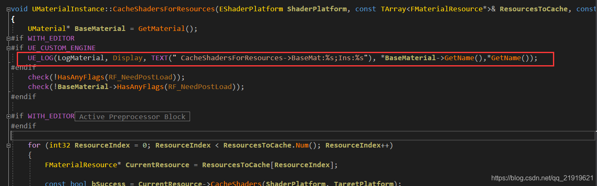
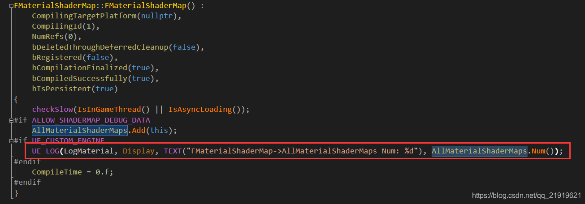
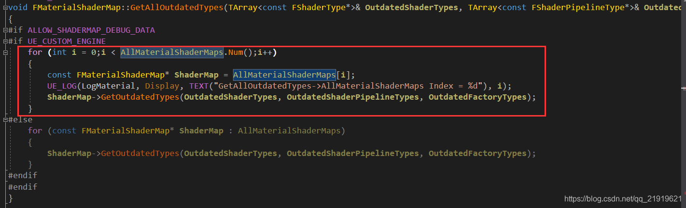
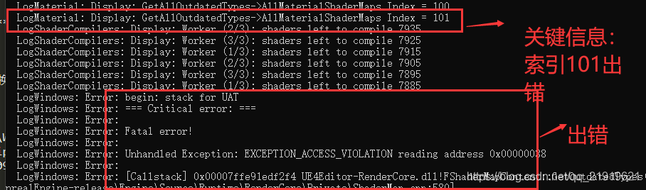

分析场景打包过程
Windows.mk ：依赖PythonAPI，执行Package.bat --ue-version 4.26 --all
-> Package.bat
1.参数解析
2.获取虚幻引擎根路径
3.设置打包的路径（包括生成压缩包的完整路径 carla/Build/UE4Carla/CARLA_0.9.15-262-g8f7e40f3c-dirty.zip ），它根据git describe --tags --dirty --always命令生成压缩包的名称，
--tags 匹配远程的tag
--dirty 表示如果源码如果被修改了，则会在版本后面加上 -dirty
--always 获取最近的 commitID
4.创建Carla包
4.1编辑Unreal/CarlaUE4/CarlaUE4.uproject文件来启用/禁用CarSim插件
4.2通过Build.bat基于Development、%PACKAGE_CONFIG%配置进行编译
4.3通过 RunUAT.bat （Unreal Automation Tool，虚幻自动化工具）烘焙并打包 （报错地方）
5.给包中添加额外的文件，包括PythonAPI等
6.压缩项目
7.移除临时的中间文件
8.烘焙其他包
RunUAT.bat 打包命令解析
查看构建烘焙运行命令BuildCookRun的帮助信息：
%UE4_ROOT%\Engine\Build\BatchFiles\RunUAT.bat BuildCookRun -Help
| 命令 | 描述 |
|---|---|
-Platform=Win64 |
目标平台为Windows |
-nop4 |
不使用Perforce版本控制 |
-project="%ROOT_PATH%Unreal/CarlaUE4/CarlaUE4.uproject" |
目标UE项目工程文件 |
-build -cook -stage -archive -package |
表示需要 构建、烘焙、暂存、归档、打包 |
-archivedirectory="!BUILD_FOLDER!" |
归档输出目录 |
-clientconfig=%PACKAGE_CONFIG% |
客户端编译配置，如Debug/Development/Shipping等 |
附录说明
自动化工具（Unreal Automation Tool，简称 UAT），自动化工具使用特定的命令 BuildCookRun
封装流程包含
| 命令 | 描述 |
|---|---|
| 构建（build） | 该阶段将为所选择的平台编译可执行文件 |
| 烘培（cook） | 该阶段通过在特殊模式下执行编辑器来转化内容 |
| 暂存（stage） | 该阶段将可执行文件和内容复制到暂存区，它是开发目录以外的独立目录 |
| 打包（package、archive） | 该该阶段将项目打包成平台原生的分发格式 |
| 部署（deploy） | 该阶段将构建版本部署到目标设备 |
| 运行（run） | 该阶段在目标平台上启动已封装的项目 |
调试
最终运行的命令为：
"C:\workspace\UnrealEngine\Engine\Build\BatchFiles\RunUAT.bat" BuildCookRun -nocompileeditor -TargetPlatform=Win64 -Platform=Win64 -installed -nop4 -project="C:/workspace/carla/Unreal/CarlaUE4/CarlaUE4.uproject" -cook -stage -build -archive -archivedirectory="C:/workspace/carla/Build/UE4Carla/1.0-7-gd8d6d49e0/" -package -clientconfig=Shipping
实际运行的构建命令（成功）：
Running: C:\workspace\UnrealEngine\Engine\Binaries\DotNET\UnrealBuildTool.exe UnrealPak Win64 Development -Project=C:\workspace\carla\Unreal\CarlaUE4\CarlaUE4.uproject C:\workspace\carla\Unreal\CarlaUE4\CarlaUE4.uproject -NoUBTMakefiles -Manifest=C:\workspace\UnrealEngine\Engine\Intermediate\Build\Manifest.xml -NoHotReload -log="C:\workspace\UnrealEngine\Engine\Programs\AutomationTool\Saved\Logs\UBT-UnrealPak-Win64-Development.txt"
实际运行的烘焙命令（失败）：
Running: C:\workspace\UnrealEngine\Engine\Binaries\Win64\UE4Editor-Cmd.exe C:\workspace\carla\Unreal\CarlaUE4\CarlaUE4.uproject -run=Cook -TargetPlatform=WindowsNoEditor -fileopenlog -unversioned -abslog=C:\workspace\UnrealEngine\Engine\Programs\AutomationTool\Saved\Cook-2025.05.23-14.23.04.txt -stdout -CrashForUAT -unattended -NoLogTimes
解决：使用Carla配置打包时，移除 DReyeVR的C++代码 可暂时规避，打包成功。
使用VR配置时，需要添加 DReyeVR的C++代码 ，可以打包成功，但是环境是黑色的，只有注视点的红色和方向盘的白色。
如果是用VR配置打包还失败，就是先要就编译器中独立程序运行后，然后安装RenderDoc，最后再打包。
找错过程
# 工作机
D:\work\workspace\UnrealEngine\Engine\Binaries\Win64\UE4Editor-Cmd.exe D:\work\workspace\carla\Unreal\CarlaUE4\CarlaUE4.uproject -run=Cook -TargetPlatform=WindowsNoEditor -fileopenlog -unversioned -abslog=D:\work\workspace\UnrealEngine\Engine\Programs\AutomationTool\Saved\Logs\Cook-2025.05.23-14.23.04.txt -stdout -CrashForUAT -unattended -NoLogTimes
报错信息（ 相同报错 ：说是.ini 的问题）：
LogWindows: Error: === Critical error: ===
LogWindows: Error:
LogWindows: Error: Fatal error!
LogWindows: Error:
LogWindows: Error: Unhandled Exception: EXCEPTION_ACCESS_VIOLATION reading address 0x0000000000000038
LogWindows: Error:
LogWindows: Error: [Callstack] 0x00007ffaedb266c4 UE4Editor-RenderCore.dll!FShaderMapContent::GetOutdatedTypes() [D:\work\workspace\UnrealEngine\Engine\Source\Runtime\RenderCore\Private\ShaderMap.cpp:581]
LogWindows: Error: [Callstack] 0x00007ff954f8b28a UE4Editor-Engine.dll!FMaterialShaderMap::GetAllOutdatedTypes() [D:\work\workspace\UnrealEngine\Engine\Source\Runtime\Engine\Private\Materials\MaterialShader.cpp:1043]
LogWindows: Error: [Callstack] 0x00007ff955413b67 UE4Editor-Engine.dll!GetOutdatedShaderTypes() [D:\work\workspace\UnrealEngine\Engine\Source\Runtime\Engine\Private\ShaderCompiler\ShaderCompiler.cpp:4216]
LogWindows: Error: [Callstack] 0x00007ff955433d03 UE4Editor-Engine.dll!RecompileShadersForRemote() [D:\work\workspace\UnrealEngine\Engine\Source\Runtime\Engine\Private\ShaderCompiler\ShaderCompiler.cpp:5129]
LogWindows: Error: [Callstack] 0x00007ff94d841c5d UE4Editor-UnrealEd.dll!UCookOnTheFlyServer::SaveGlobalShaderMapFiles() [D:\work\workspace\UnrealEngine\Engine\Source\Editor\UnrealEd\Private\CookOnTheFlyServer.cpp:5511]
LogWindows: Error: [Callstack] 0x00007ff94d8459dc UE4Editor-UnrealEd.dll!UCookOnTheFlyServer::StartCookByTheBook() [D:\work\workspace\UnrealEngine\Engine\Source\Editor\UnrealEd\Private\CookOnTheFlyServer.cpp:6865]
LogWindows: Error: [Callstack] 0x00007ff94d6843b9 UE4Editor-UnrealEd.dll!UCookCommandlet::CookByTheBook() [D:\work\workspace\UnrealEngine\Engine\Source\Editor\UnrealEd\Private\Commandlets\CookCommandlet.cpp:919]
LogWindows: Error: [Callstack] 0x00007ff94d6ae428 UE4Editor-UnrealEd.dll!UCookCommandlet::Main() [D:\work\workspace\UnrealEngine\Engine\Source\Editor\UnrealEd\Private\Commandlets\CookCommandlet.cpp:624]
LogWindows: Error: [Callstack] 0x00007ff77ab596da UE4Editor-Cmd.exe!FEngineLoop::PreInitPostStartupScreen() [D:\work\workspace\UnrealEngine\Engine\Source\Runtime\Launch\Private\LaunchEngineLoop.cpp:3369]
LogWindows: Error: [Callstack] 0x00007ff77ab50e6d UE4Editor-Cmd.exe!GuardedMain() [D:\work\workspace\UnrealEngine\Engine\Source\Runtime\Launch\Private\Launch.cpp:127]
LogWindows: Error: [Callstack] 0x00007ff77ab511ca UE4Editor-Cmd.exe!GuardedMainWrapper() [D:\work\workspace\UnrealEngine\Engine\Source\Runtime\Launch\Private\Windows\LaunchWindows.cpp:137]
LogWindows: Error: [Callstack] 0x00007ff77ab64e5d UE4Editor-Cmd.exe!WinMain() [D:\work\workspace\UnrealEngine\Engine\Source\Runtime\Launch\Private\Windows\LaunchWindows.cpp:268]
LogWindows: Error: [Callstack] 0x00007ff77ab66f02 UE4Editor-Cmd.exe!__scrt_common_main_seh() [D:\a\_work\1\s\src\vctools\crt\vcstartup\src\startup\exe_common.inl:288]
LogWindows: Error: [Callstack] 0x00007ffb52ed7374 KERNEL32.DLL!UnknownFunction []
LogWindows: Error: [Callstack] 0x00007ffb54edcc91 ntdll.dll!UnknownFunction []
LogWindows: Error:
LogWindows: Error: end: stack for UAT
调试配置
1.打开项目的 VS 工程
打开工程下的 sln 文件（carla/Unreal/CarlaUE4/CarlaUE4.sln）以通过 VS 打开工程。
2.在需要的地方下断点
根据报错信息，在UnrealEngine\Engine\Source\Runtime\RenderCore\Private\ShaderMap.cpp:581打断点（也可以在任何想要调试的地方下断点）。
3.选择合适的 VS 配置
确认选择合适的配置（Development Editor）、平台（Win64）和启动工程（CarlaUE4）等。
4.打开工程的属性配置界面
在解决方案视图（Solution Explorer）中的工程名字上右键，点击属性（Properties）。
此时会打开对应工程的属性页面（Property Pages）；
点击配置属性（Configuration Properties） 下的调试（Debugging） 标签；
在命令参数（Command Arguments）中输入对应的 Cook 命令，在原有的命令后添加：
-run=Cook -TargetPlatform=WindowsNoEditor -fileopenlog -unversioned -abslog=D:\work\workspace\UnrealEngine\Engine\Programs\AutomationTool\Saved\Logs\Cook-2025.05.23-14.23.04.txt -stdout -CrashForUAT -unattended -NoLogTimes
附 Cook 命令格式：
-run=cook -targetplatform=<Plat1>+<Plat2> [-cookonthefly] [-iterate] [-map=<Map1>+<Map2>]
点击确定或应用，属性页面会自动关闭。
5.开始调试
点击 Debug - Start Debugging ，或直接按 F5 等，启动调试。
通过对堆栈和属性等或其它操作进行正常的分析调试。
注意!!! 需要重新运行 make package，不能在vs中只运行之前的烘焙命令，否则不会显示所做修改的日志。
根据最后一个出错的id，加1后获得烘焙出错的资产
LogMaterial: Display: GetAllOutdatedTypes->AllMaterialShaderMaps Index = 219
LogMaterial: Display: CacheShadersForResources->BaseMat:ProceduralHairCardsShader,Ins:MI_cardsShader_hairEyebrowsLOD1
LogMaterial: Display: FMaterialShaderMap->AllMaterialShaderMaps Num: 220
把不兼容的材质全删除。
材质的报错信息为（ 特性关卡ES3_1不支持光照模型MSM_Hair ）：
ShadingModel MSM_Hair not supported in feature level ES3_1
增加烘焙提示信息
1.当项目打包时，cook出错，但是从原始引擎提供的信息中，没有提示具体的那个资源出错，要查到出错资源，还是非常麻烦。
2.下面就材质cook出错，增加一些日志，方便查找问题做简单记录
3.材质cook的一个阶段，是收集MaterialShaderMap,如果在这个阶段收集的信息出错，将会在FShaderMapContent::GetOutdatedTypes函数中，因为Shaders指针指向的内存有问题而出错，通过断点发现，FShaderMapContent这个类对象指针为null，而这个类对象的来源于AllMaterialShaderMaps中，但是通过纯断点调试，发现FMaterialShaderMap::GetAllOutdatedTypes这个函数是多线程运行，所以查看变量的值可能会错乱，所以通过增加日志的方式，永久性解决这一问题 4.首先在UMaterialInstance::CacheShadersForResources函数中，添加材质实例母材质名字日志

5.然后在AllMaterialShaderMaps.Add处，打印AllMaterialShaderMaps的个数，可以通过这个个数判断打印的母材质实例名字这条信息对应的AllMaterialShaderMaps中的索引值

6.最后修改FMaterialShaderMap::GetAllOutdatedTypes中的实现，并打印当前执行的AllMaterialShaderMaps的索引值，当在该函数出错时，将会打印出出错的索引

7.如何判断：通过出错的索引 + 1，在日志中去找【FMaterialShaderMap->AllMaterialShaderMaps Num：】这条日志;通过该信息，寻找附近【CacheShadersForResources->BaseMat】日志，该日志会定位出错的母材质和材质实例

注意
以上日志的对应关系，是通过断点查变量值，对比变量地址得来的
定义自定义引擎
将 USE_CUSTOM_ENGINE 定义添加到 Engine/Source/Runtime/Core/Public/Misc/Build.h。